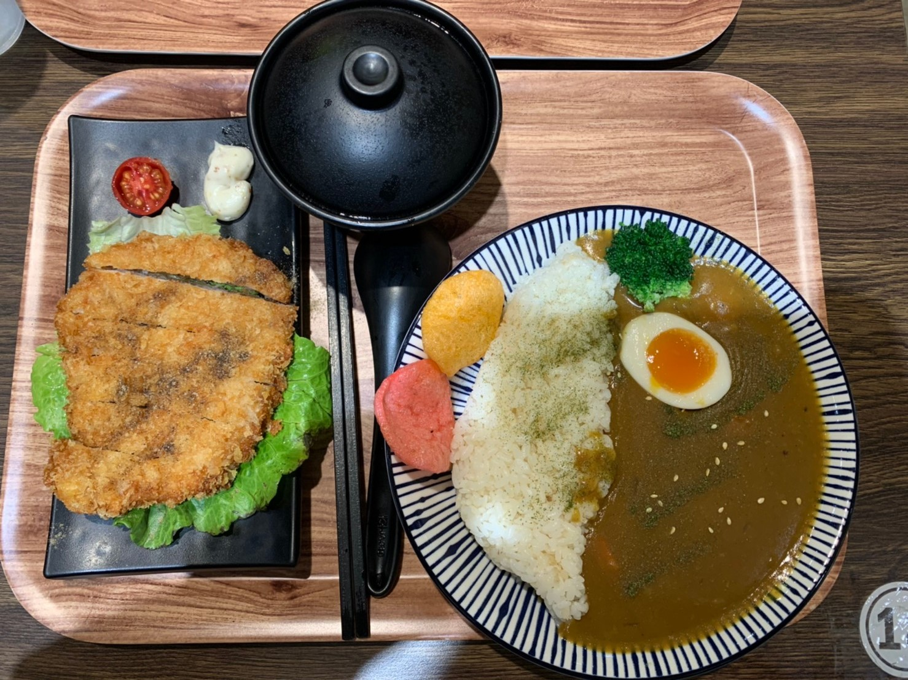
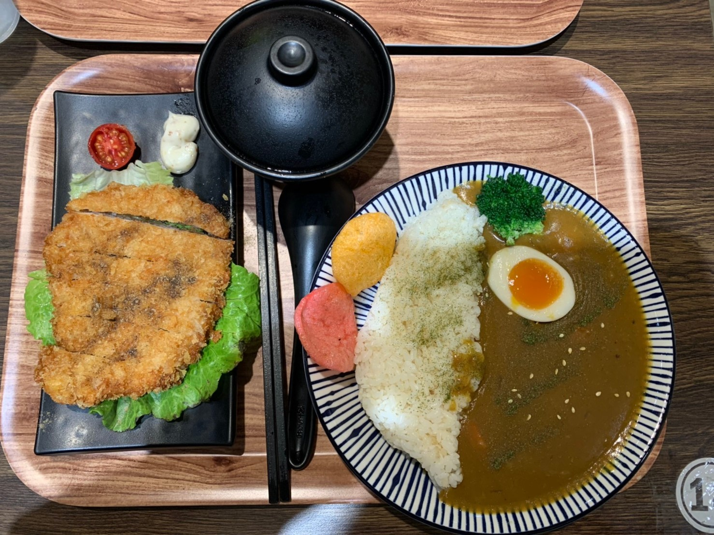
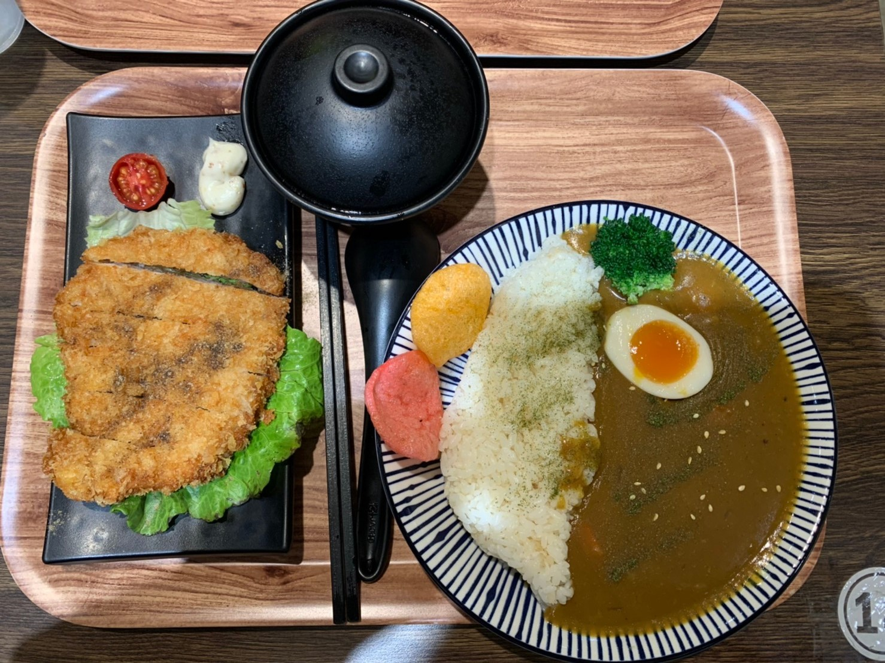

中原的美食太多，每天都好煩惱

小河屋

門口掛著大大的讚岐烏龍麵，還以為是專賣烏龍麵的呢！沒想到裡面也有賣咖哩， 他的咖哩是甜咖哩，跟中原其他咖哩比較不一樣，但如果要吃咖哩我還是會選擇陳主席啦~(〃∀〃) 但他的味道滿特別的，想嘗鮮還是OKOK的，另外他的烏龍麵真的好吃喔~不會很重口，是清淡的湯頭 讓人比較沒有負擔，雖然身在夜市當中，但他的環境寬敞乾淨，內用的話有檸檬水或冬瓜茶，他也有賣生魚片， 聽說還不錯喔！下次有機會可以去吃吃看！有錢的話(・∀・)
推薦指數：⭐⭐⭐⭐ cp值：⭐⭐⭐⭐ 營業時間：11:30~23:30